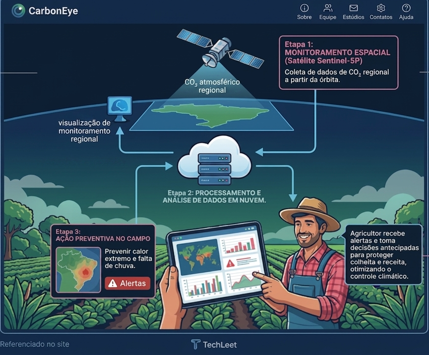

Solução
A solução para esse cenário de incertezas está em cima dos nossos narizes, unindo a inovação aeroespacial ao campo por meio do monitoramento avançado por satélite. A iniciativa do CarbonEye utiliza os dados coletados pelo satélite Sentinel-5P para mapear com precisão os níveis de dióxido de carbono (CO₂) da região escolhida pelo produtor. Essa tecnologia atua como um radar que monitora o nível de pureza do ar, traduzindo indicadores do espaço em diagnósticos claros e localizados para a realidade de cada propriedade rural.
O foco desse ecossistema tecnológico está o agricultor, que deixa de ficar vulnerável às variações do tempo e passa a ter o controle estratégico de sua plantação. Com o acesso a essas informações, o produtor rural ganha a capacidade de se prevenir contra situações climáticas inesperadas. Essa tomada de decisão antecipada protege a saúde da lavoura contra perdas severas, assegurando a produtividade do campo.
Painel de Monitoramento
Selecione uma região agrícola para que o satélite Sentinel-5P faça a leitura dos dados atmosféricos.
Aguardando comando de telemetria...